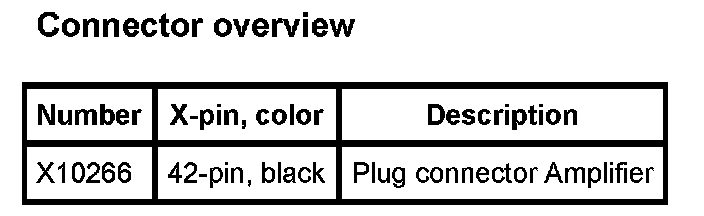

Operation CHARM
: Car repair manuals for everyone.
Home
>>
BMW
>>
2007
>>
X3 3.0si (E83) L6-3.0L (N52K)
>>
Repair and Diagnosis
>>
Accessories and Optional Equipment
>>
Radio, Stereo, and Compact Disc
>>
Amplifier
>>
Diagrams
>>
A18 Amplifier
>>
A18 Amplifier (X Series_X3-E83 With Hifi System E83)
A18 Amplifier (X Series_X3-E83 With Hifi System E83)
A18 Amplifier:
